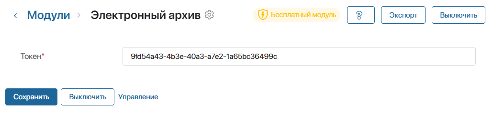

Бизнес-решение Электронный архив загружается из каталога ELMA365 Store и настраивается пользователями, входящими в группу Администраторы.
Начало внимание
Для установки и работы решения Электронный архив нужно, чтобы в компании были установлены решения Управление договорами и Archive Packer.
Конец внимание
Установить решение «Электронный архив»
- Перейдите в раздел Администрирование > Решения и в правом верхнем углу нажмите + Решение.
- В открывшемся окне выберите Скачать и перейдите в каталог ELMA365 Store.
- Найдите решение Электронный архив и нажмите кнопку Попробовать бесплатно. Решение будет доступно для работы в течение 14 дней. Подробнее о загрузке решений читайте в статье «Импорт решения из ELMA365 Store».
- После проверки и установки решения в систему добавится модуль Электронный архив и раздел Электронный архив.
Начало внимание
Решение Электронный архив по умолчанию заблокировано. Администратор может разблокировать его и адаптировать под потребности компании.
Конец внимание
По прошествии бесплатного периода для работы с решением его нужно активировать. Для этого:
- Перейдите в раздел Администрирование > Управление лицензиями и на карточке решения Архивное дело нажмите кнопку Активировать.
- Скопируйте регистрационный токен решения и передайте его менеджеру ELMA365.
- Вставьте полученный ключ активации в соответствующее поле и нажмите кнопку Активировать.
Подробнее читайте в статье «Лицензии ELMA365 Store».
Добавить API-токен для работы с электронным архивом
Чтобы обеспечить обмен данными в решении, необходимо добавить API-токен.
- Перейдите в Администрирование > Токены и создайте новый токен для модуля Электронный архив.
- Скопируйте токен в поле в модуле Электронный архив.
 - Созданный токен также нужно указать в параметре на уровне раздела. Для этого перейдите в раздел Электронный архив и нажмите на значок рядом с его названием.
- В открывшемся меню нажмите Дополнительные параметры.
- Найдите в списке параметр token и нажмите значок . Вставьте ранее скопированный токен в появившееся поле. Нажмите , чтобы сохранить изменения.
Настроить группы и роли в разделе «Электронный архив»
Группы и роли используются для настройки прав доступа и определения сотрудников, которые будет участвовать в бизнес-процессах раздела Электронный архив.
В решении предусмотрены следующие группы и роли:
- роль Администратор — пользователь с правами для настройки решения;
- проверяют списки документов в рамках процесса приёма и проверки;
- проверяют заявки на получение документов из архива;
- отправляют реестры документов на согласование перед архивированием;
- готовят документы к уничтожению.
- группа Делопроизводители — сотрудники, которые дорабатывают реестры документов в рамках процесса проверки. Имеют права на работу с документами в разделах Загрузчик, Реестр и Архив;
- группа Все документы без оригинала — сотрудники с правом просматривать все документы на странице Бумажные документы без оригинала. Остальные сотрудники видят только те документы, в которых они указаны как ответственные.
Чтобы настроить группы и роли:
- Перейдите в раздел Электронный архив, нажмите значок шестерёнки рядом с его названием и выберите Настройки групп.
- Нажмите на название группы или роли, затем на кнопку Редактировать.
- В поле Список участников группы добавьте пользователей, группы или элементы оргструктуры.
- Сохраните изменения.
Ограничить доступ к разделу «Электронный архив»
По умолчанию все пользователи системы имеют доступ к разделу Электронный архив и его приложениям.
Администратор может настроить дополнительные права. Например, разрешить всем пользователям просматривать файлы в приложении Реестр, а редактировать их и создавать новые записи — только отдельным сотрудникам.
Подробнее читайте в разделе «Система прав доступа в ELMA365».
Заполнить служебные справочники в разделе «Электронный архив»
В решении предусмотрено два служебных справочника: СПВДОК и Виды документов. Они позволяют классифицировать документы в соответствии с требованиями налогового органа.
Справочники заполняются автоматически и связаны друг с другом. Сначала заполните справочник СПВДОК, а затем — Виды документов. Для этого:
- На главной странице решения нажмите кнопку Заполнить справочник СПВДОК.
- В открывшемся окне нужно загрузить актуальный СПВДОК с сайта ФНС. Для этого нажмите на ссылку для скачивания и распакуйте архив на локальном компьютере.
- Выберите файл формата .xlsx и вставьте его в поле для загрузки.
- Нажмите Подтвердить. Все виды документов из файла отобразятся в справочнике СПВДОК в разделе Электронный архив.
- Теперь добавьте записи в справочник Виды документов. Для этого перейдите на главную страницу решения и нажмите кнопку Заполнить виды документов. В открывшемся окне нажмите Заполнить.
В справочник автоматически добавятся 34 вида документов. Каждый вид документа соответствует записи из справочника СПВДОК. Если нужный вам вида документа отсутствует, добавьте его вручную.
Добавить вид документа вручную
Откройте приложение Виды документов и нажмите кнопку + Вид документа. Заполните форму:

- Выбор родительской папки — в этом поле по умолчанию указан контракт Основной архив.
- Папка? * — по умолчанию выбрана опция Нет. Выберите Да, если нужно создать новую вложенную папку в основном архиве;
- Активно? * — по умолчанию вид документа активен. Только активные виды можно выбрать при добавлении документа в архив. Используйте опцию Нет, если в данный момент этот вид документа неактуален, но может понадобиться в дальнейшем;
- Название * — укажите наименование вида документов;
- Ответственный руководитель — вы можете выбрать сотрудника, ответственного за данный вид документа. Используйте эту настройку в бизнес-процессах, например, для согласования документов создаваемого вида перед отправкой в архив;
- kform — введите код формы документа по ОКУД;
- СПВДОК — выберите соответствующий вид документа из справочника СПВДОК;
- Тип приложения — выберите приложение, в котором будут храниться документы данного вида;
- Содержимое пакета — заполните таблицу, если хотите настроить пакет документов для создаваемого вида. Например, пакет для акта приёмки работ содержит договор и счёт-фактуру. Пользователь должен приложить их к акту перед отправкой в архив. Чтобы настроить такое поведение в настройках Акта приёмки добавим виды документов Договор и Счёт-фактура в таблицу и отметим их обязательными для заполнения.